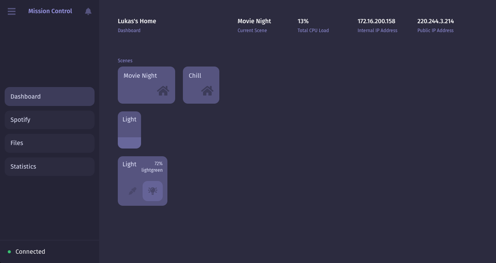

Mission Control
Beautiful home automation software built on Node.js and the Raspberri Pi.


One to two paragraph statement about your product and what it does.

Installation
OS X & Linux:
npm install my-crazy-module --save
Windows:
edit autoexec.bat
Usage example
A few motivating and useful examples of how your product can be used. Spice this up with code blocks and potentially more screenshots.
For more examples and usage, please refer to the Wiki.
Development setup
Describe how to install all development dependencies and how to run an automated test-suite of some kind. Potentially do this for multiple platforms.
make install
npm test
Release History
- 0.2.1
- CHANGE: Update docs (module code remains unchanged)
- 0.2.0
- CHANGE: Remove
setDefaultXYZ() - ADD: Add
init()
- CHANGE: Remove
- 0.1.1
- FIX: Crash when calling
baz()(Thanks @GenerousContributorName!)
- FIX: Crash when calling
- 1.0.0
- The first proper release
Authors
Lukas Mateffy – @Capevace – mateffy.me
Distributed under the MIT license. See LICENSE for more information.
Contributing
- Fork it (https://github.com/capevace/PROJECT/fork)
- Create your feature branch (
git checkout -b feature/fooBar) - Commit your changes (
git commit -am 'Add some fooBar') - Push to the branch (
git push origin feature/fooBar) - Create a new Pull Request
Acknowledgments
Some acknowledgements.